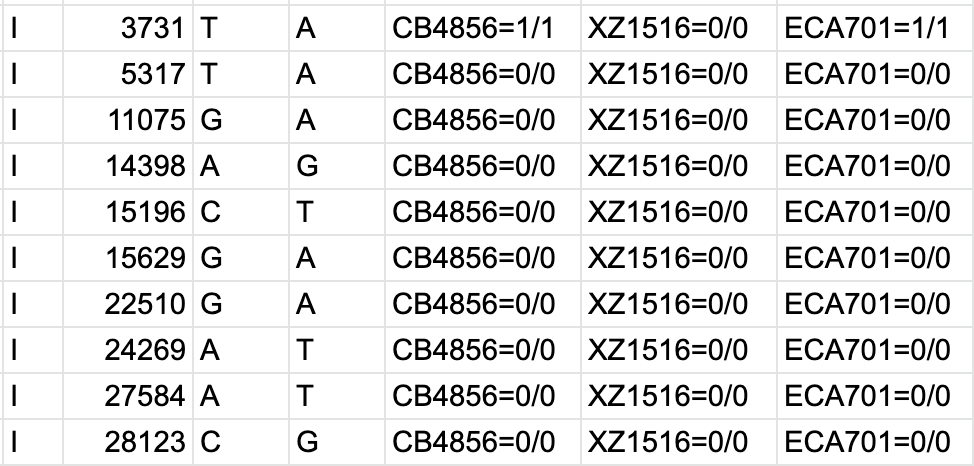

Command line¶
Bash is the default unix shell on Mac OS and most Linux operating systems. Many bioinformatic programs are run using the command line, so becoming familiar with Bash is important.
Start with this introduction to bash. Also check out this cheatsheet
Basic Commands¶
You should familiarize yourself with the following commands.
- alias - create a shortcut for a command
- cat - concatenate files
- zcat - concatenate zipped files
- cd - change directories
- curl - download files
- wget - download files
- echo - print strings
- export - Add a variable to the global environment so that they get passed on to child processes.
- grep - filter by pattern
- egrep - filter by regex
- rm - delete files
- sudo - run as an administrator
- sort - sorts files
- source - runs a file
- ssh - connect to servers
- which - locate files on your PATH
- uniq - get unique lines. File must be sorted.
- cut - select specific columns from a text file
- head - select the first N lines of a text file
- tail - select the last N lines of a text file
Piping¶
In order to pass the output of one command to the next, you can use a pipe, |, which allows you to create chains of tools to create single-line workflows on the command line.
cat example.tsv | uniq
The above line will print out a sorted list of unique lines from the file example.tsv. cat prints every line from the file to the standard output, but instead of being printed to the terminal, they are redirected to the input of uniq, which then sorts the lines and keeps one copy per set of identical lines which are then printed to the terminal.
Redirects¶
Like piping, we can tell the command line interpreter to redirect the contents of a file to a command as input or the output of a command to be saved in a file.
- > - Take the output from the left-hand side of the redict and write it to a file specified on the right-hand side (note that this will overwrite an existing file of the same name)
- >> - Take the output from the left-hand side of the redict and append it to a file specified on the right-hand side (if no file exists, this will work the same as the
>) - < - Take the file on the right-hand side of the redirect and use its contents as the input to the first command on the left-hand side of the redirect (this essentially replaces using
cat file.txt |but is used at the end of the line)
uniq > example_uniq.txt < example.txt
The above line will create the same output as the piping example but save it to a new file named example_uniq.txt rather than print it to the terminal.
More Advanced¶
You should learn these once you have the basics down.
- git - version control
- awk - file manipulation; Filtering; Rearranging columns
- sed - quick find/replace
Good Guides¶
Below are some good guides for various bash utilities.
grep¶
awk¶
- awk guide
- awk by example - hundreds of examples
Rearranging columns¶
cat example.tsv | awk -f OFS="\t" '{ print $2, $3, $1 }'
The line above will print the second column, the third column and finally the first column.
Filtering based on criteria¶
Print only lines that start with a comment (#) character
cat example.tsv | awk '$0 ~ "^#" { print }'
bcftools¶
bcftools view
- bcftools view
- view VCF - bcftools view -h
- view only header of VCF - bcftools view -H
- view VCF without header
- bcftools view -h
- bcftools view -s CB4856,XZ1516,ECA701
- subset vcf for only these three samples - bcftools view -S sample_file.txt
- subset vcf for only samples listed in sample_file.txt
- bcftools view -S sample_file.txt
- bcftools view -r III:1-800000
- subset vcf for a region of interest - can also just use
-r IIIto get entire chromosome - bcftools view -R regions.txt
- subset vcf for a region(s) of interest in the regions.txtfile
- can also just use
bcftools query
- bcftools query -l
- print out list of samples in vcf - Print out contents of vcf in specified format (i.e. tsv):
bcftools query -f '%CHROM\t%POS\t%REF\t%ALT[\t%SAMPLE=%GT]\n' <vcf> > out.tsv
Output of above line of code:

- bcftools query -i GT=="alt"
- keep rows that include a tag (like a filter) - bcftools query -e GT=="ref"
- remove rows that include a tag
Note
bcftools query -i/e are not necessarily opposites. For example, if you have three genotype options (REF, ALT, or NA), including only ALT calls is different than exluding only REF calls...
For more, check out the bcftools manual and this cheatsheet
Persistent terminals¶
A persistent terminal is one that will continue to run even after you've logged out of a remote system or closed your terminal program. This allows you to run programs and allow them to continue running without needing to keep the terminal window open. This is especially useful for running pipelines. Programs that create persistent terminals also allow you to have multiple terminal windows that you can easily switch between. Once you have shut the persistent terminal window, you can easily open it again to continue interacting with it and maintain the command history for that window.
Screen¶
screen is a persistent terminal that is available on both Rockfish and QUEST. On Rockfish, you need to load it as a module with the command module load screen prior to using it. On QUEST, it is available upon login. To start a screen session, use the following command:
screen -S SessionName
where SessionName is some meaningful name for your persistent terminal. A new empty terminal window should replace your current terminal window. You can use this like any other terminal window. When you are ready to detach (exit the terminal window but keep it running), you use the key combination ctrl-A, d. This will create a detached screen session. To reattach (reopen) the detached session, use the command:
screen -r SessionName
This will attach to the screen session specified by SessionName. This also means that you can have multiple screen sessions detached and running at the same time. To see all available sessions, use the command screen -ls. To reattach to one of the listed sessions, use the name following the period in the left-hand column.
To permanently close a screen session, just type exit in the attached terminal session.
-
Note * On Rockfish, you are randomly assigned to one of three login nodes. Detached sessions only exist on the node that they were created on. So, note which node you are on. To reopen that session you will need to login ot the same node.
Tmux¶
tmux is a persistent terminal that is available on QUEST and can easily be installed on Rockfish with conda. To start a tmux session, use the following command:
tmux new -s SessionName
where SessionName is some meaningful name for your persistent terminal. A new empty terminal window should replace your current terminal window. You can use this like any other terminal window. When you are ready to detach (exit the terminal window but keep it running), you use the key combination ctrl-B, d. This will create a detached tmux session. To reattach (reopen) the detached session, use the command:
tmux attach -t SessionName
This will attach to the tmux session specified by SessionName. This also means that you can have multiple tmux sessions detached and running at the same time. To see all available sessions, use the command tmux ls. To reattach to one of the listed sessions, use the name to the left of the colon in the left-hand column.
To permanently close a screen session, just type exit in the attached terminal session.
-
Note * On Rockfish, you are randomly assigned to one of three login nodes. Detached sessions only exist on the node that they were created on. So, note which node you are on. To reopen that session you will need to login ot the same node.